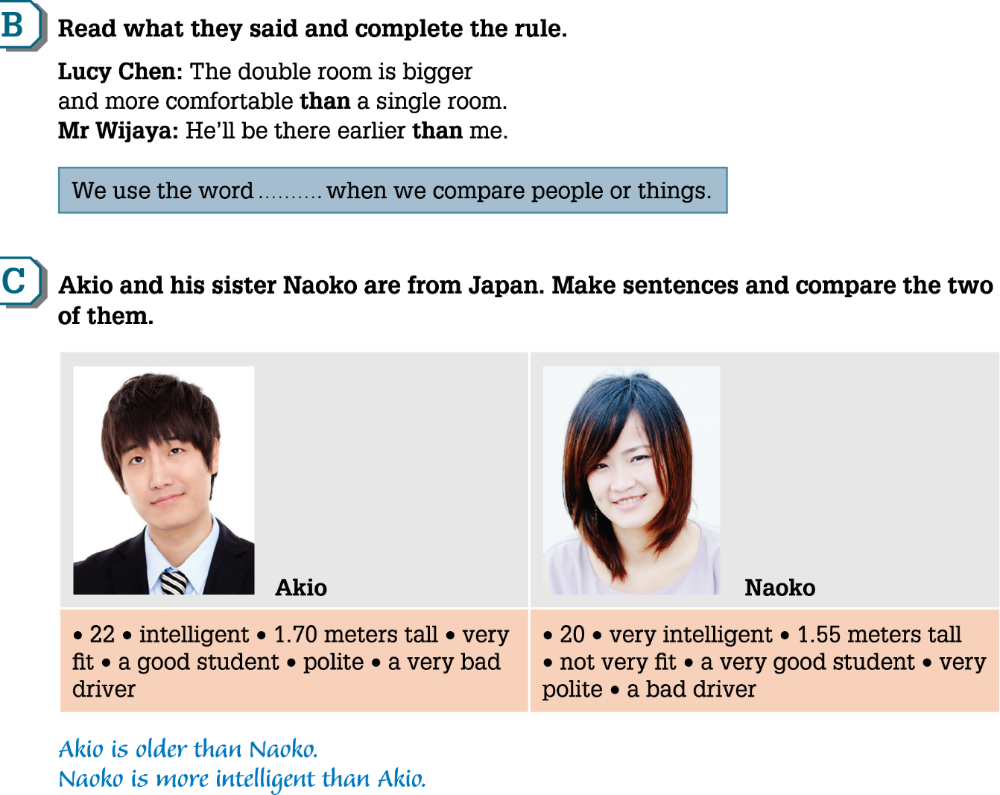
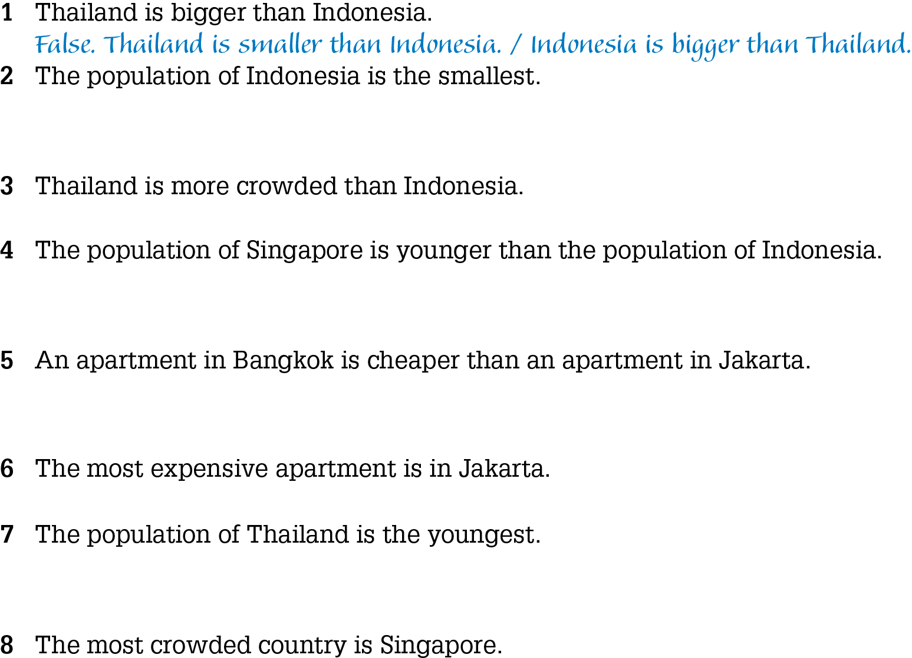
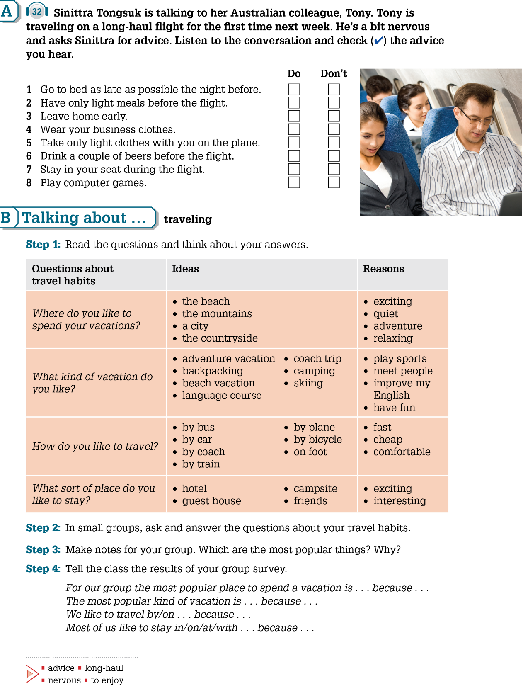
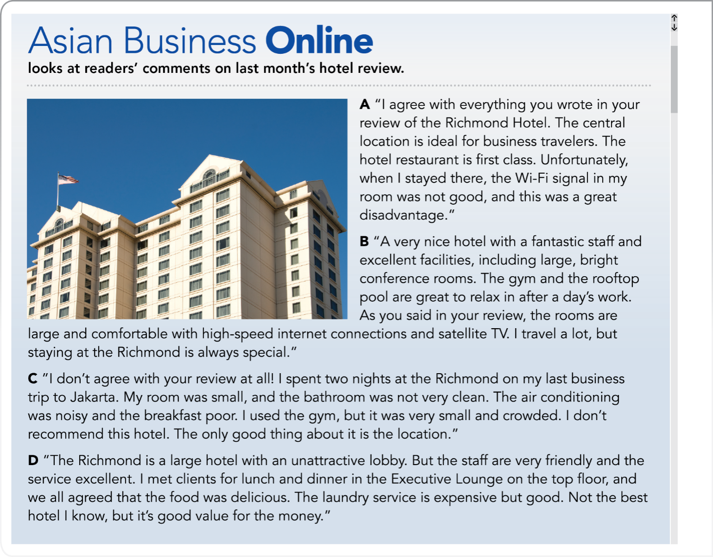

比較兩者
adjective + -er + than
more + adjective + than
短形容詞常加 -er；較長的形容詞常用 more。
cheap → cheaper · big → bigger
comfortable → more comfortable
BUSINESS ENGLISH / 國貿英語
用英文比較、規劃旅程，
讀懂商務旅客的飯店評論。
Business Plus 1 · Unit 6 · pp. 46–51
YOUR LEARNING ITINERARY
01 / GRAMMAR FOCUS · P. 47
Comparing people, places, and things
adjective + -er + than
more + adjective + than
短形容詞常加 -er；較長的形容詞常用 more。
cheap → cheaper · big → bigger
comfortable → more comfortable
the + adjective + -est
the most + adjective
最高級通常搭配 the，表示群體中的最高程度。
good → better → best
bad → worse → worst
as + adjective + as
not as + adjective + as
使用形容詞原形，表示一樣或沒那麼。
This room is as comfortable as that one.
根據簡報第 47 頁的人物資料，練習比較句。
22 歲 · 1.70 m
very fit · a good student
polite · a very bad driver
20 歲 · 1.55 m
not very fit · a very good student
very polite · a bad driver

原簡報包含國家面積、人口與租金比較題，但未附完整數據表。請搭配課本第 46–47 頁查表作答；本網站不替缺少資料的題目編造答案。課本數據作為原單元練習資料使用。

02 / LISTENING & SPEAKING · P. 48
談談旅行習慣，再給旅伴一個建議。
活動步驟與句型範例為網站補充教學設計。
You should take the train.
You could stay in a guest house.
should + 動詞原形：建議。
could + 動詞原形：提出可行的選項。
來自現有課本音檔，配合第 48 頁使用。

03 / READING · P. 51
同一間飯店，四位旅客的不同經驗。先讀評論，再找出支持答案的句子。

飯店與旅客評論為提供的教材內容，用於閱讀練習。
04 / KNOWLEDGE CHECK
完成 12 題文法與閱讀練習，提交後查看解析。題目為依教材編寫的補充練習。
作答紀錄僅保存在此裝置的瀏覽器。下載 JSON 後可交給老師；此頁不會自動上傳學生資料。
RESOURCE DESK
建議流程：暖身 5 分鐘、比較句 10 分鐘、旅遊口說與 Track 32 聽力 15 分鐘、飯店閱讀 15 分鐘、練習回饋 10 分鐘。可依班級程度調整。
請搭配正式課本使用。原簡報第 46 頁沒有可擷取的完整課文，部分比較題缺少數據表。本網站保留原始簡報，並標明補充活動。朗讀功能產生的是合成語音。
更新方式：修改 GitHub 中的 data/lesson.json、data/questions.json 或網站檔案。GitHub Pages 會重新發布。教材來源保留原作者權利。